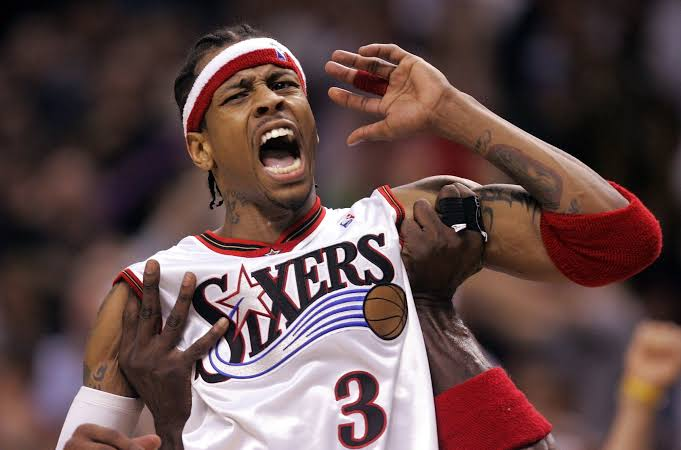

About Me
My name is Oscar Tamborg Sørensen, and I am 24 years old. I was born and raised in Sæby in the northern part of Denmark. In 2021, I moved to Copenhagen, where I now live on my own in Sluseholmen.
I am currently studying IT Architecture at Erhvervsakademi København. During my studies, I have so far worked with HTML, CSS, JavaScript, SQL, project management, visualization, and aesthetics.
CHECK OUT SOME OF MY PROJECTS →Sports are a big part of my free time, especially football and basketball. Real Madrid became my favorite football team because of Marcelo. I really liked watching him play, and that made me start supporting Real Madrid.

In the NBA, my favorite team is the Philadelphia 76ers. I became a fan after watching a documentary about Allen Iverson. I found his story and the way he played really interesting, and since then I have followed the 76ers.